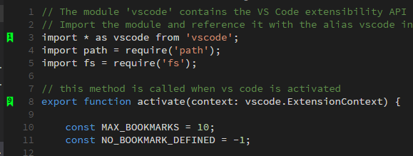
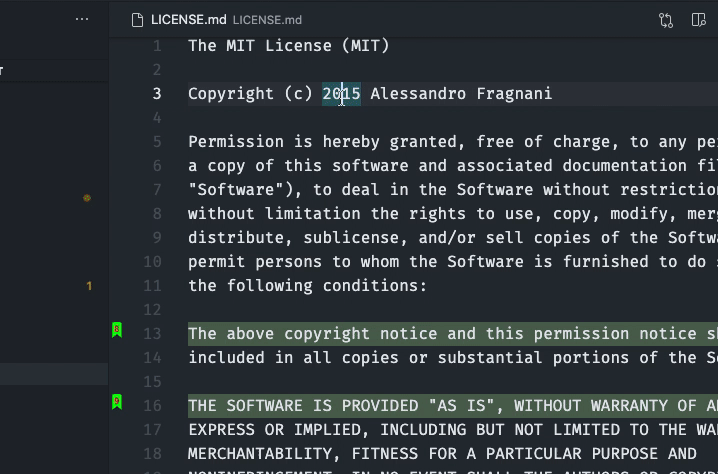

A modern release focused on open publishing and better workflows.
The current release expands distribution, and improves the everyday bookmark flow.
Visual Studio Code Extension
Numbered Bookmarks brings Delphi-style bookmarks to VS Code so you can mark positions, jump back instantly, list bookmarks across files, and keep working even as files change.

What's new in 9
The current release expands distribution, and improves the everyday bookmark flow.
Features
Toggle and jump bookmark slots 0 through 9 with predictable command names and keyboard shortcuts.
02Browse bookmarks in the current file or across all files, then clear one file or the whole workspace when you need to reset.
03Keep bookmarks between sessions, save them in the project, and carry them with you across machines.
Quick actions
The core flow is intentionally small: mark a spot, jump back later, inspect what is saved, and clear it when the task is done.
Use Numbered Bookmarks: Toggle Bookmark '#number' and Numbered Bookmarks: Jump to Bookmark '#number' to work in numbered slots from 0 to 9.
List the current file or all files, then clear just one file or the full set when you are ready to move on.

Project and session persistence
Bookmarks are saved between sessions by default. If you want the same bookmarks on every machine,
enable project storage and the extension writes them to .vscode/numbered-bookmarks.json.
The extension supports multi-root workspaces and lets each folder keep its own bookmark set.
Use the same bookmarks when you connect through SSH, Docker, WSL, or other remote VS Code scenarios.
FAQ
Use the numbered toggle and jump commands for slots 0 through 9. That keeps the workflow predictable and fast when you move between the same code spots repeatedly.
Yes. You can list bookmarks in the current file or across all files, inspect the line contents, and choose the destination you want from the picker.
Yes. Turn on numberedBookmarks.saveBookmarksInProject and the extension stores them in .vscode/numbered-bookmarks.json so they travel with the repository.
The new sticky engine helps bookmarks follow edits, supports formatter-driven changes, and can keep a bookmark on the next line when the original line is deleted.
You can customize the gutter icon colors, line background, border, overview ruler marker, and reveal position. There is also a warning setting for undefined bookmarks.
Yes. The extension is designed for VS Code and its forks, so the bookmark workflow should remain available in those editors as well.
Please open an issue on GitHub Issues. That is the best place to report a problem or request a change.
Start with the repository and the README. If you still need help, the issue tracker is the most direct support path.
Donate
Numbered Bookmarks is open source, and support helps keep maintenance, compatibility, and future improvements moving forward.